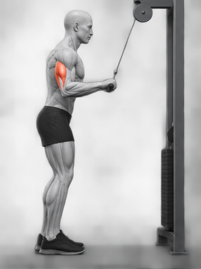
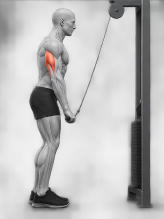

PT노트 · 팔 / 마무리 운동
삼두 · 팔 뒤쪽케이블 푸시다운
01
두 자세로 핵심 잡기
준비몸과 팔꿈치 고정

팔꿈치 고정팔꿈치를 몸 옆에.손잡이를 잡고 배에 힘을 줍니다.
팔 펴기삼두의 조임

같은 자리 유지팔만 아래로 펴세요.팔 뒤쪽이 조이는 느낌을 찾습니다.
2컷 그림은 두 손가락으로 확대할 수 있어요.
움직임과 고정
가슴이 돌아가지 않게, 배에 힘.
팔꿈치는 끝까지 몸 옆에 고정합니다.
느낌과 돌아오기
붉은 삼두가 단단히 조이는 느낌.
천천히 돌아올 때도 팔꿈치는 그대로.
무게보다 팔꿈치 고정이 우선입니다. 몸이 흔들리면 자세를 다시 잡으세요.
02
입체로 자세 확인하기
옆·앞·뒤에서 살펴보세요.
원하는 각도로 돌리고, 멈춰서 확인할 수 있어요.
버튼을 누르면 회전과 확대를 시작합니다.
준비 자세팔꿈치 고정드래그로 회전 · 휠 / 두 손가락으로 확대
준비 · 기구 가까이 서기
팔꿈치를 몸 옆에 고정하세요.
3D는 동작 확인용으로 단순화한 인체입니다. 방향키로 회전, + / −로 확대·축소할 수도 있습니다.